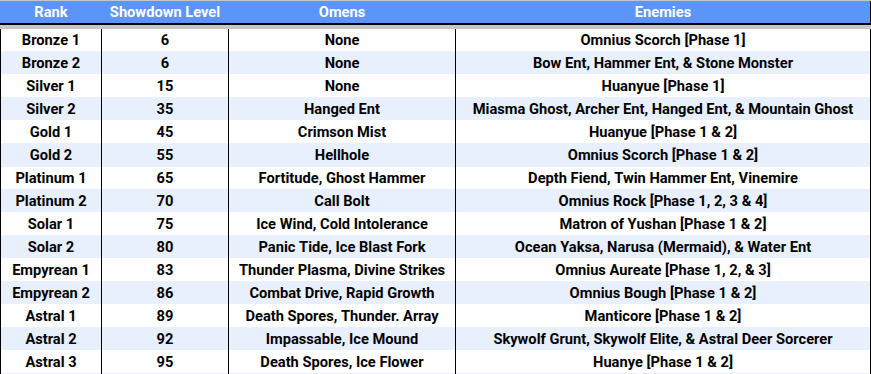

Doom
You can access Doom missions by going to the Select Mode Map and clicking the ominious swirling whirlpool at the top right.
Doom consists of 3 missions with static Omens and 3 special objectives that grant you a star for completing each one. These objectives are made up of the following:
- Complete the Stage Successfully.
- Complete the Stage Successfully within a Time Limit.
- Complete the Stage Successfully within a smaller Time Limit.
Due to the overlap of the special objectives, it is possible to get 3 stars from a single run.
However, it is not required to complete every single one of them in one run to get all 3.
They only have to be completed once per week. You can view the specifics when choosing a mission under Doom Domain.

For every 3 stars gained, you get a reward of 2 Epic or Legendary Souljades and
800, 900 or 1000 Showdown Pass XP for 3, 6 and 9 stars.

Speedrun
You can access Speedrun by going to the Select Mode Map and clicking the ominious swirling whirlpool at the top right. Speedrun is similar to Doom in that you can acquire 3 stars as well and it has static Omens. However, the selection of Omens it has are unique to the mode, often with them changing the way you have to play that mission. Furthermore, the enemies are along the highest levels of Sense, so they hit much harder and have more health.
Rank Titles
The main goal of Speedrun is to not only clear it, but to clear it as fast as possible to get a good rank on the leaderboards. If you rank among the top 500, you will gain a title corresponding to it and a Legendary Souljade. You can only get one Legendary Souljade from this regardless of the number of servers you have accomplished this in.
The rank specific titles are as follows:
- Ranks 1 - 10: Golden Title
- Ranks 11 - 100: Silver Title
- Ranks 101 - 500: Green Title
Enigma Domain
Enigma Domain is a mission type in Morus Isle, that costs 30 fatigue per run and a
 Rune Key.
If you use a
Rune Key.
If you use a
 Legendary Rune Key
to enter, it'll boost the Luck for your whole team, resulting in slightly better drops.
It currently has two maps for it, the newest one being the area for chapter 2 and the old one from chapter 1.
Legendary Rune Key
to enter, it'll boost the Luck for your whole team, resulting in slightly better drops.
It currently has two maps for it, the newest one being the area for chapter 2 and the old one from chapter 1.
Enigma Topaz
General Strategy (for Group Play)
- Your team should have a designated Jungler, while the other two are Bossers.
- Kurumi is recommended to be one of the Bossers as she can provide nice buffs and healing to her partner.
- Your Jungler's role is to get the enhance percentage to as close to 74% as they can (50% at the minimum).
- Doing so will make it so when the boss is killed, the next boss spawn will have a high chance to be placed at the same location.
- The boss spawn is determined when the enhance percentage reaches 75%.
- Try to keep an eye on how much % you gain from killing certain enemy types and opening Stronghold chests.
- There will be 9 bosses total of increasing Sense Levels until they reach 700.
- When the Sense Level reaches 700, try to fight the bosses that spawn as 3 people instead of two to clear it efficiently.
- Save the Demon Elixirs the bosses drop until the later ones so you can kill them faster.
- The Jungler on the other hand should aim to pick up as many buffs as they can from the Strongholds.
General Strategy (for Solo Play)
Clear mobs until boss spawns and reach enhance bar 66-74% then proceed to kill 3 bosses in a row then repeat. Doing this strat should guarantee that the boss spawn does not move at all, allowing you to get some insane clear speeds.
Enigma Peak
General Strategy
- Similar to Topaz, you should have a Jungler and two Bossers.
- Burn builds are recommended for the Bossers as they deal they highest dps right now.
- Your Jungler's role is to get the enhance percentage to as close to 67% as they can (42% at the minimum).
- The boss spawn is still determined when the enhance percentage reaches 75%, however, bosses give +33% instead of +25% in Enigma Peak.
- Eerie Bosses can begin spawning at Enhance 5 and up. Approach them with caution.
- Eerie Bosses have new movesets, deal much more damage and have more health than normal.
- Make sure to manage the Demon Elixirs dropped by bosses well as you'll have to squeeze every bit of damage you can.
- To fully clear it, your build should be close to if not fully complete, including your Attributes being the way you want them.
Rewards
- For beating the 1st boss.
1 Epic Souljade Random Gift + 2 Carved Crystals
- For beating the 2nd boss.
1 Epic Souljade Random Gift + 2 Carved Crystal
- For beating the 3rd boss.
 1 Epic Souljade Random Gift + 4 Carved Crystals
1 Epic Souljade Random Gift + 4 Carved Crystals
- For beating the 4th boss.
 1 Epic Souljade Choice Gift + 4 Carved Crystals
1 Epic Souljade Choice Gift + 4 Carved Crystals
- For beating the 5th boss.
 1 Legendary Rune Key + 6 Carved Crystals
1 Legendary Rune Key + 6 Carved Crystals
- For beating the 6th boss.
1 Legendary Rune Key + 6 Carved Crystals
- For beating the 7th boss.
 1 Legendary Souljade Choice Gift + 8 Carved Crystals
1 Legendary Souljade Choice Gift + 8 Carved Crystals
- For completing Enigma Peak.
 1 Legendary Souljade Choice Gift + Hero Seal
1 Legendary Souljade Choice Gift + Hero Seal
Nirriti's Ruins
Nirriti's Ruins is a roguelike mission type that consists zones. There will be 15 zones you will have to clear to fully complete it. 3 of these zones can be shop zones, 3 will be boss zones and the rest will be mob zones. The lost curse and the green codex can enable access to special zones with different objectives.
What Affects Nirriti's Ruins
With Nirriti's Ruins being a roguelike, your progression is reset with every run. The only things that are brought from outside of Nirriti's Ruins, are the bonuses from your Hero's Level.
Collections
Nirriti's Ruins introduces new items known as Anima Rings that increase your power temporarily. Each Anima Ring belongs to a Collection and you get a bonus for the number of them that you've acquired at least once before. Each Collection generally contains Anima Rings that synergize with each other, with The Awakening Collection having Rings around Bolts. Trios as a Solo Player so you can stack up on Dark Tide Coins for buying lots of Anima Rings.
Favored Collections
In the current state of Nirriti's Ruins some Anima Ring Collections have proven to be significantly more effective than others. With the utmost effective for dealing damage being the Anima Rings under the Element Collection. This is because each of the Rings multiply on top of each other, giving you absolutely insane damage if you're lucky enough to acquire all 7 of them. Beware, on the other hand, there are Omens that are on certain stages that outright nerf Elemental Damage, such as Enhanced Burn and Enhanced Blade Edge. However, there is also the Currency Collection, specifically Special Offer and Showdown Smuggler. Special Offer grants a 35% discount to the shop, making your money ~54% more effective! Showdown Smuggler on the other hand spawns a shop with a 15% discount, however, you can spawn this shop in a boss room to get your refresh on your Souljades early! Both of these Anima Rings play a key role and getting enough Anima Rings to be able to clear the later Main Stages fast enough to not time out.
Secret Anima Ring
There exists a secret Anima Ring when you acquire the Lost curse and are sent into the "Lost" zone. There will be two bosses, Fiery Monster and Mountain Ghost. I recommend beating the Fiery Monster first and then lure the Mountain Ghost into the corner that sticks out inconspicuously. Then you want the boss to hit the back wall of that corner until it breaks and there will be a green item on the ground. Picking that up will grant your entire team the Secret Anima Ring, Divine Army from the Sky. For a visual guide, check out this video:
Main Stages
There are a total of 4 Stages: Normal, Hard, Nightscream and Legend, in the order of easiest to hardest.
Available Anima Rings
Here are all of the Anima Rings in Season 2.0's Nirriti's Ruins:
The Awakening Collection
Element Collection
Counter Collection
Hydroflare Collection
Ranged Collection
Attack Collection
Yin-Yang Collection
Survival Collection
Currency Collection
Secret Collection
Leaderboard
The Leaderboard is split into 4 sections:
Yama's Abyss • Trios, Yama's Abyss • Solo, Speedrun, & Speedrun • Last Week.
Each section has a sub-section by the hero that was used.
For the Yama's Abyss sections, the order of the ranks is determined first by the stage cleared.
Then it goes to who cleared the stage in the least amount of time taken.
If two or more players are found to have the same time taken and stage cleared, then it is placed in the order
of who was on the leaderboard first.
The following are all of the current ranks in Yama's Abyss:

For the Speedrun sections, it is first determined by the time taken, with faster times ranking higher.
Then if two or more players have the same time taken, then they are ordered by who was up there first.
You are awarded a Title depending on your rank and the section of that rank.
The titles are colored as follows:
- Top 10: Golden Title
- Ranks 11 - 100: Silver Title
- Ranks 101 - 500: Green Title
Titles from Speedrun have this appearance: 
Titles from Yama's Abyss have this appearance: